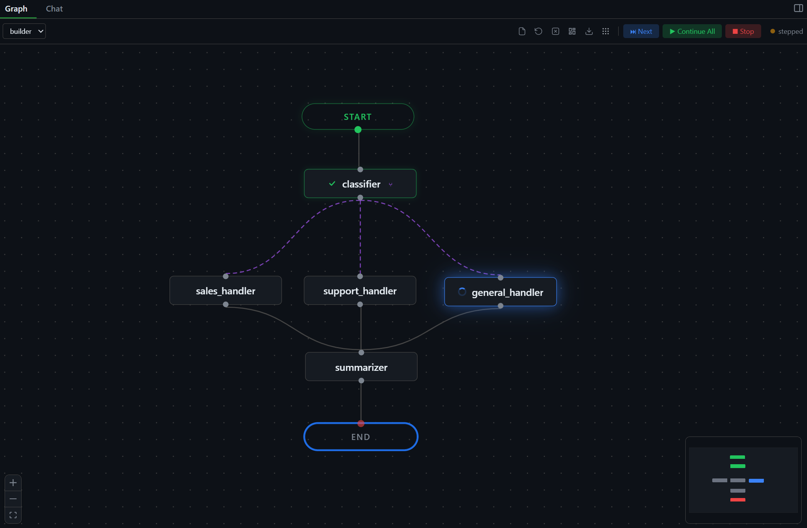
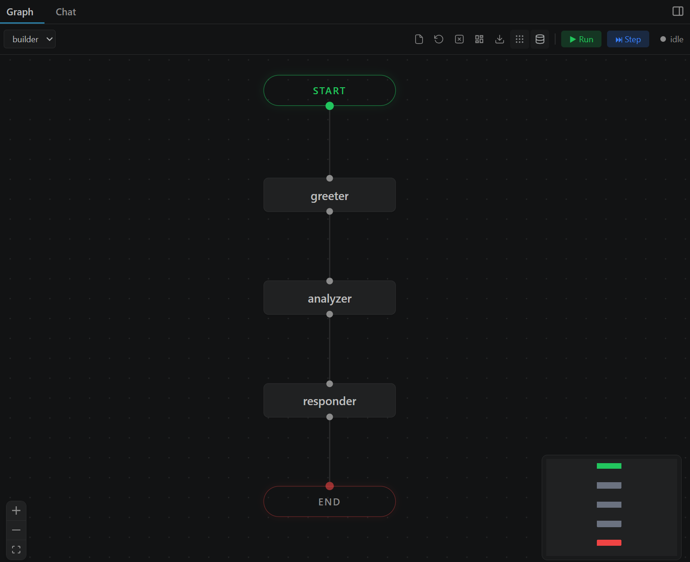
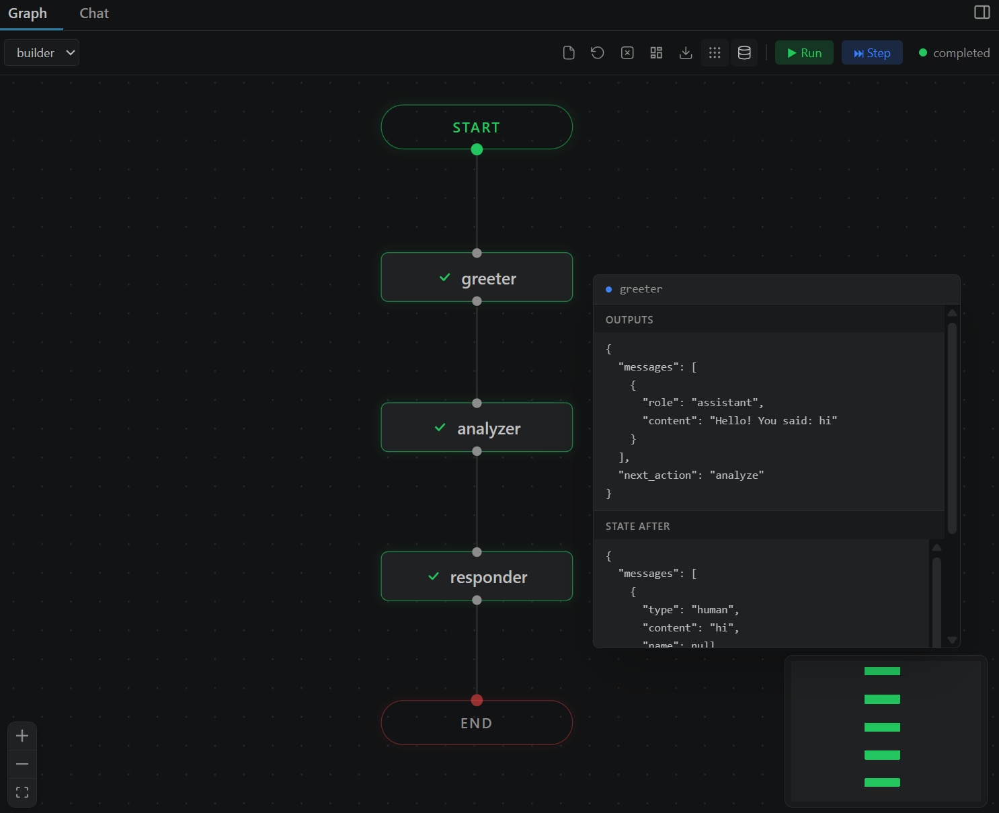
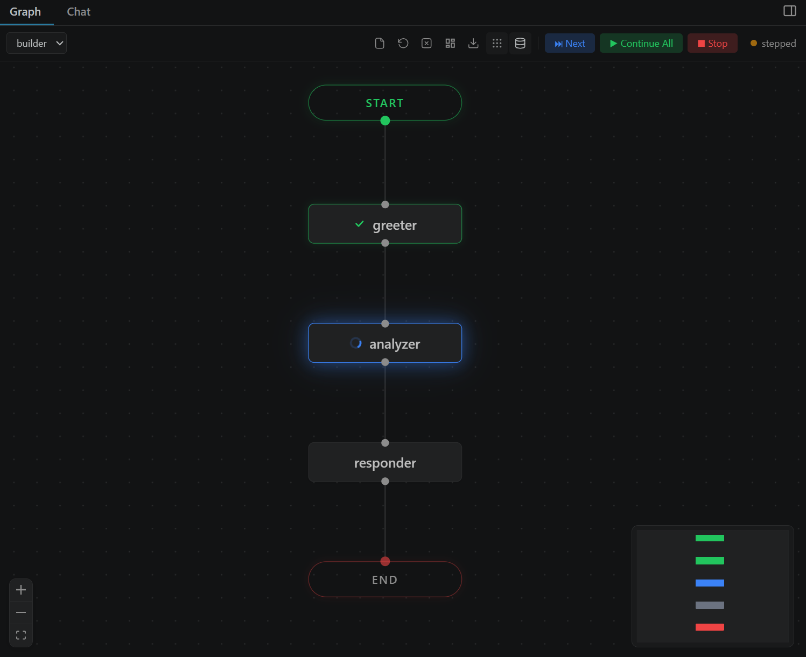
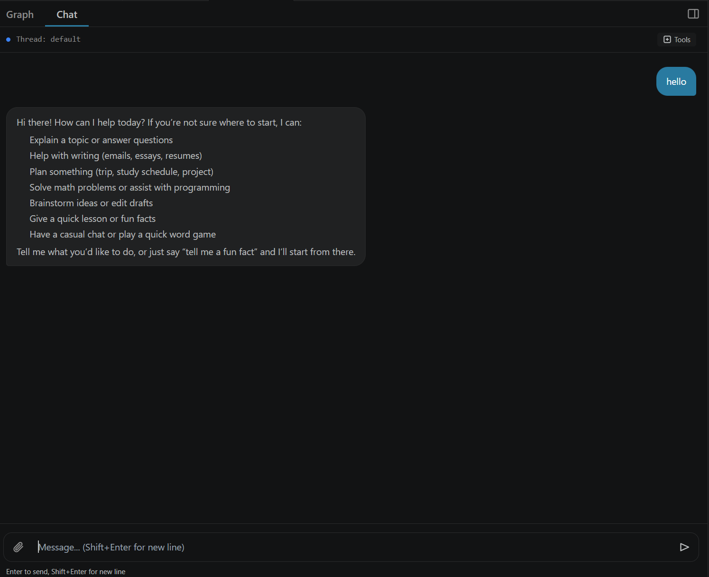
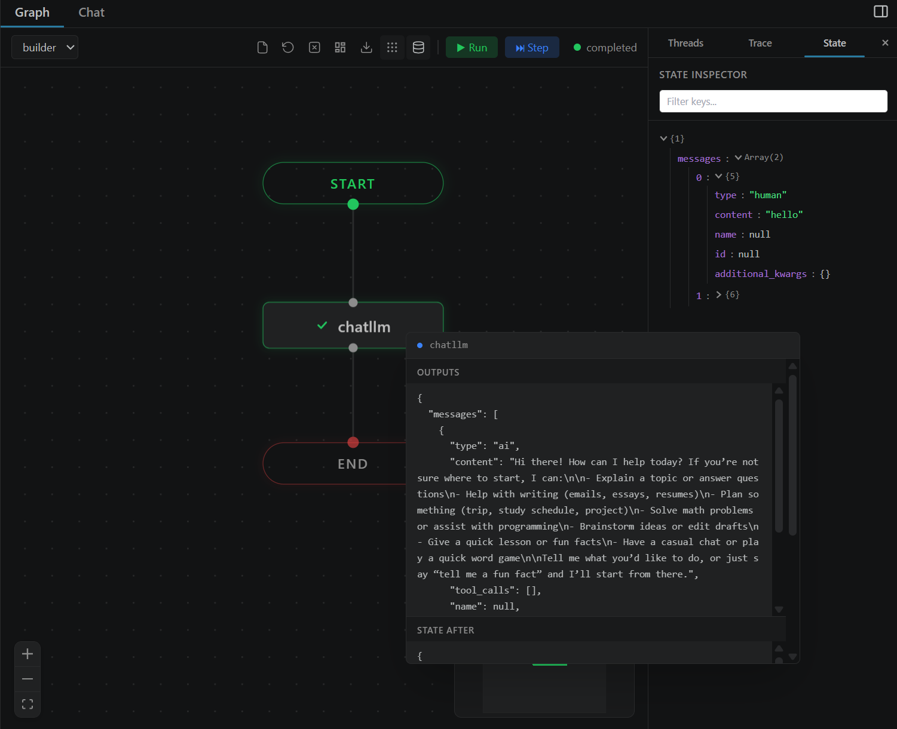
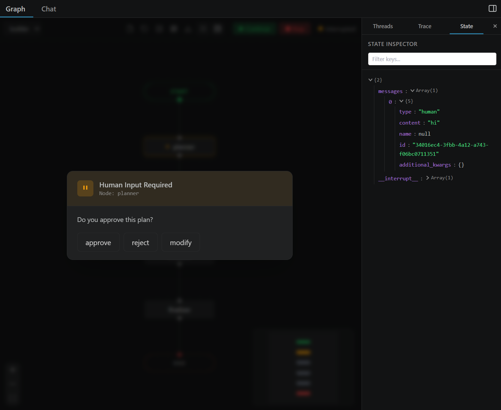

The open-source visual debugger for LangGraph agents. Watch execution flow through nodes in real time, step through decisions, and inspect state — all inside VS Code. No cloud. No accounts. Free forever.

You build complex agent workflows with conditional branches, tool calls, and human-in-the-loop. Then you debug with print statements.
Your agent's architecture exists only in code. You trace execution by reading logs line by line.
When something goes wrong, you add print statements, re-run, and hope the output tells you enough.
LangSmith is great for production. But for local development, you want something that runs right in your editor.
See every node, edge, conditional branch, and loop. Drag nodes, zoom in, auto-layout. The infinite canvas renders your graph exactly as LangGraph sees it.

Nodes light up as they execute. Edges animate to show data flow. You see exactly which node is running, which completed, and which errored.

Click Step to pause after each node. Inspect the full state. Click Next to advance one step, or Continue All to let it run. Like a debugger, but for agents.

Send messages, see streaming responses, view tool calls. Attach images and files for multimodal agents. Switch between Graph and Chat views with one click.

Hover any node to see the complete state snapshot at that point in execution. Scrollable, formatted, always accessible.

When your agent pauses for human input, VizLang shows the interrupt right in the UI. Approve, reject, or type a response without leaving VS Code.

Search "VizLang" in VS Code Extensions or install from the marketplace.
Open any Python file with a LangGraph StateGraph. Right-click and select "Open in VizLang".
Click Run or Step. Watch your graph execute. Inspect state. Debug visually.
| Feature | VizLang | LangSmith | print() |
|---|---|---|---|
| Visual graph | Yes | Yes | No |
| Step-by-step debugging | Yes | No | No |
| Runs locally | Yes | Cloud | Yes |
| No account required | Yes | No | Yes |
| State inspection | Hover | Click | Manual |
| Chat interface | Built-in | Playground | No |
| In your editor | VS Code | Browser | Terminal |
| Free | Always | Freemium | Yes |
| Open source | MIT | Proprietary | N/A |
VizLang is MIT-licensed and open source. Every line of code is on GitHub. We welcome contributions of all kinds — bug reports, feature ideas, code, docs, and examples.
Found something broken? Open an issue with steps to reproduce and we'll fix it.
Have an idea that would make your workflow better? Start a discussion on GitHub.
Pick a "good first issue", fork the repo, and submit a PR. Setup takes 30 seconds.
Open source. MIT licensed. Free forever. No cloud. No accounts. No telemetry.